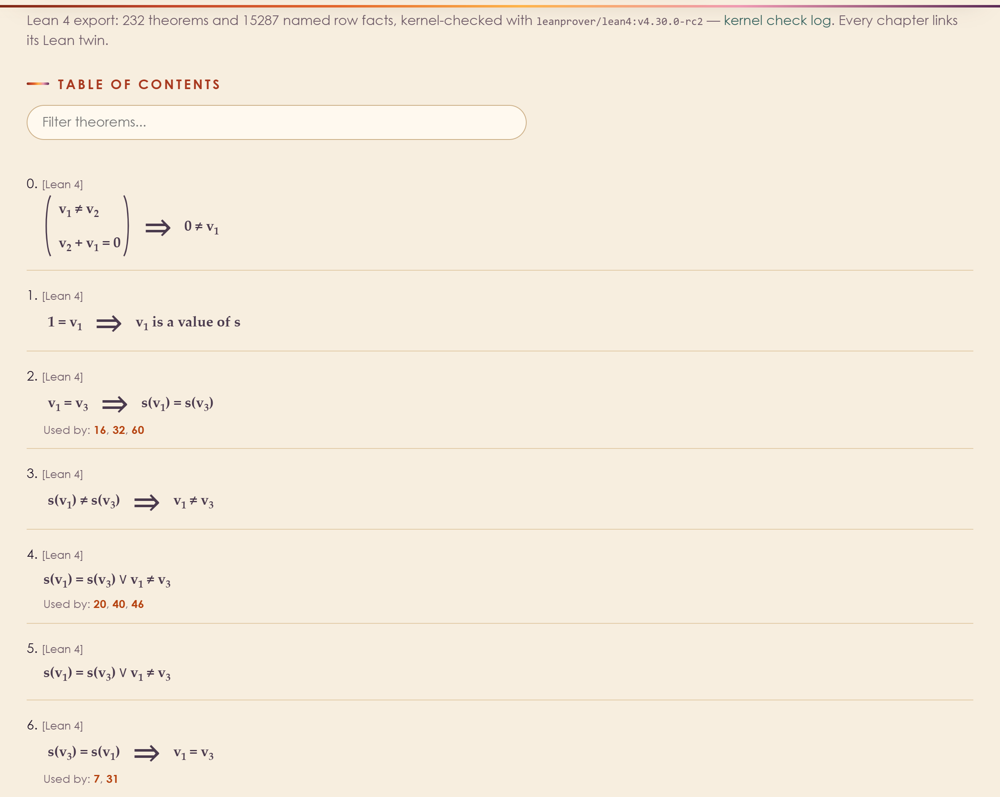
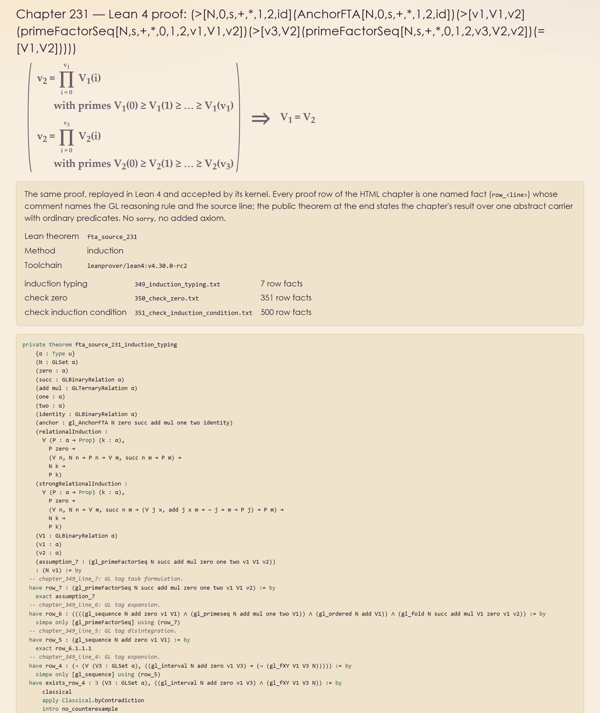

Proofs generated by the GL engine, including Peano arithmetic laws and the Fundamental Theorem of Arithmetic, are exported to Lean 4 and checked by the Lean kernel.
Abstract
We present Generative Logic (GL), a deterministic computer architecture for automated mathematical reasoning. GL starts from axiomatic definitions written in a minimalist Mathematical Programming Language (MPL) and explores a configurable region of their deductive neighborhood. The definitions are compiled into a grid of Logic Blocks (LBs). An LB applies rules by hash-table lookups, and every statement it derives keeps its complete provenance. A run generates conjectures, removes those that counterexamples refute, tries to prove the rest, reduces the proved theorems to an essential core and writes every proof as navigable HTML. An independent verifier checks every proof step. From supplied definitions, GL derives the basic laws of Peano arithmetic and Gauss's summation formula. From previously proved lemmas, further definitions and a supplied list of conjectures, it builds a proof of the Fundamental Theorem of Arithmetic (FTA). These proofs are also exported to Lean 4 and checked by the Lean kernel. The next step is for GL to derive the FTA as well, without supplied conjectures. GL is designed together with a hardware architecture, the Mathematical Processing Unit (MPU).
Problem
Proof assistants check proofs mechanically but writing proofs takes considerable manual effort, and LLM provers need a human to state each goal. The work targets deterministic generation and proof of the family of theorems that follows from a set of axiomatic definitions.
Approach
Generative Logic compiles definitions written in a minimalist Mathematical Programming Language into a grid of Logic Blocks that apply inference rules by hash-table lookups and keep full provenance for each derived statement. A run generates conjectures, removes those refuted by counterexamples, proves the rest, reduces the results to an essential core and writes the proofs as HTML. An independent verifier checks every step, and the proofs are exported to Lean 4 with one Lean fact per step for checking by the Lean kernel. A companion hardware design, the Mathematical Processing Unit, is outlined.

Figure 8: The proof index in common notation. Each entry links to its chapter and to its Lean version; “Used by” lists the chapters that cite the theorem.
Results
From definitions, GL derives the basic Peano laws: from 1,001 generated candidates plus one supplied lemma it proves 129 theorems, which compress to 36 essential ones. It also derives Gauss's summation formula. With supplied conjectures it builds a proof of the Fundamental Theorem of Arithmetic. All of these proofs are checked by the Lean 4 kernel, and a full run takes 5.8 minutes on a laptop.

Figure 10: The Lean 4 page of the same proof. Each proof step of the HTML page is one named fact in Lean, and the Lean kernel checks the whole proof.